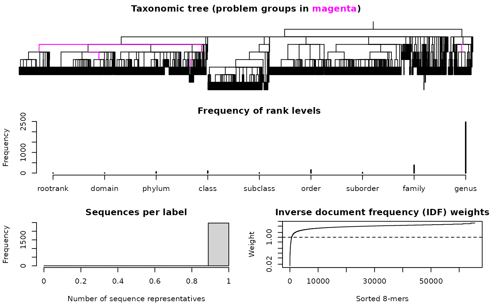
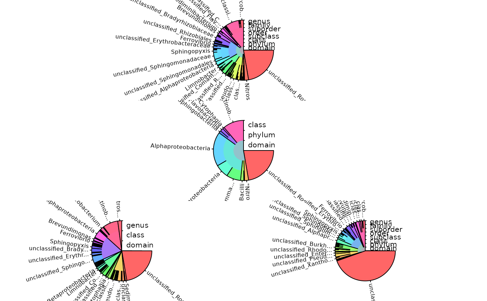

Taxa training and testing objects
Taxa-class.RdTaxonomic classification is the process of assigning an organism a label that is part of a taxonomic hierarchy (e.g., Phylum, Class, Order, Family, Genus). Here, labels are assigned based on an organism's DNA or RNA sequence at a rank level determined by the classification's confidence. Class Taxa provides objects and functions for storing and viewing training and testing objects used in taxonomic classification.
Usage
# S3 method for Taxa
plot(x,
y = NULL,
showRanks = TRUE,
n = NULL,
...)
# S3 method for Taxa
print(x,
...)
# S3 method for Taxa
[(x, i, j, threshold)Arguments
- x
An object of class
Taxawith subclassTrainorTest.- y
An (optional) object of class
Taxawith the opposite subclass asx.- showRanks
Logical specifying whether to show all rank levels when plotting an object of class
Taxaand subclassTest. IfTRUE(the default), then ranks are shown as (colored) concentric rings with radial lines delimiting taxa boundaries.- n
Numeric vector giving the frequency of each classification if
xoryis an object of subclassTest, or the default (NULL) to treat all classifications as occurring once. Typically, specifyingnis useful when the classifications represent varying numbers of observations, e.g., when only unique sequences were originally classified.- ...
Other optional parameters.
- i
Numeric or character vector of indices to extract from objects of class
Taxawith subclassTest.- j
Numeric or character vector of rank levels to extract from objects of class
Taxawith subclassTest.- threshold
Numeric specifying the confidence
thresholdat which to truncate the output taxonomic classifications. Note thatthresholdmust be higher than the original for the classifications to change.
Details
Objects of class Taxa are stored as lists, and can have either subclass Train or Test. The function LearnTaxa returns an object of subclass Train, while the function IdTaxa can return an object of class Test.
Training objects are built from a set of reference sequences with known taxonomic classifications. List elements contain information required by IdTaxa for assigning a classification to test sequences.
Testing objects can be generated by IdTaxa from a Training object and a set of test sequences. Each list element contains the taxon, confidence, and (optionally) rank name of the taxonomic assignment.
The information stored in Taxa can be visualized with the plot function or displayed with print. Only objects of subclass Train can be subsetted without losing their class.
Author
Erik Wright eswright@pitt.edu
Examples
data("TrainingSet_16S")
plot(TrainingSet_16S)
#> Warning: argument 1 does not name a graphical parameter

# import test sequences
fas <- system.file("extdata", "Bacteria_175seqs.fas", package="DECIPHER")
dna <- readDNAStringSet(fas)
# remove any gaps in the sequences
dna <- RemoveGaps(dna)
# classify the test sequences
ids <- IdTaxa(dna, TrainingSet_16S, strand="top")
#> ================================================================================
#>
#> Time difference of 7.59 secs
#>
ids
#> A test set of class 'Taxa' with length 175
#> confidence name taxon
#> [1] 72% uncultured bacter... Root; Bacteria; Firmicutes; Bacilli; Ba...
#> [2] 62% uncultured bacter... Root; Bacteria; Firmicutes; Bacilli; Ba...
#> [3] 65% uncultured bacter... Root; Bacteria; Firmicutes; Bacilli; Ba...
#> [4] 91% uncultured bacter... Root; Bacteria; Firmicutes; Bacilli; La...
#> [5] 60% uncultured bacter... Root; Bacteria; Firmicutes; Clostridia;...
#> ... ... ... ...
#> [171] 38% uncultured bacter... Root; unclassified_Root
#> [172] 49% uncultured bacter... Root; unclassified_Root
#> [173] 30% uncultured bacter... Root; unclassified_Root
#> [174] 49% uncultured bacter... Root; unclassified_Root
#> [175] 54% uncultured bacter... Root; unclassified_Root
plot(ids) # plot all rank levels
plot(ids[, 1:4]) # plot the first rank levels
plot(ids[j=c("rootrank", "class", "genus")]) # plot specific rank levels
plot(ids[threshold=70]) # plot high confidence classifications
